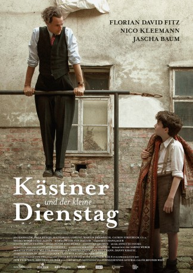

IMDB-Wertung: 7.2 / 10
IMDB-Wertung: 7.2 / 10  Metascore:
Metascore: 
A biographical look on Erich Kästner and his biggest fan around the second world war.
 IMDB-Wertung: 7.2 / 10 Metascore:
A biographical look on Erich Kästner and his biggest fan around the second world war.
Jahr: 2016
Dauer: 98 Minuten
FSK: 6
Land: Deutschland Studio: ARDTonspuren:
Untertitel:
Auflösung: 720p (1280x720) Größe: 1679 MB
Genre: Drama
Regisseur: Wolfgang Murnberger
Drehbuch: Dorothee Schön
Soundtrack: Annette Focks
Darsteller:
 Florian David Fitz als Erich Kästner
Florian David Fitz als Erich KästnerDatei: X:\2016(G-M)\Kästner und der kleine Dienstag (2016, FSK6, 1280x720).mkv seit 09.01.2018
Festplatte: HD 2016(A-Z)
 Es gibt insgesamt 164 Filme in der Gruppe '2016(G-M)'
Es gibt insgesamt 164 Filme in der Gruppe '2016(G-M)'